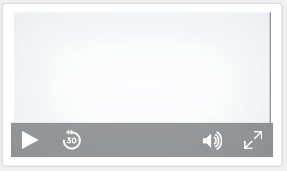
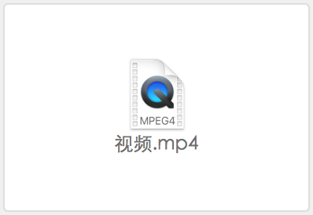
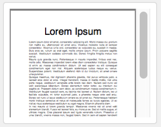
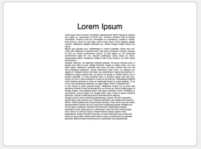
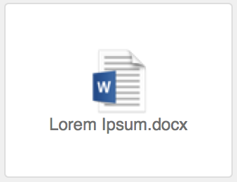

使用容器字段中的数据
容器字段可以存储图片、音频和视频文件、PDF 或要在数据库中保存的任何其他类型的文件。通过插入、拖动到字段中或从剪贴板上粘贴文件，可以将内容添加到容器字段。
如果字段是交互容器，可以交互方式处理字段的内容。例如，可以播放字段中的音乐、视频或滚动字段中的 PDF。一个字段是否是交互容器取决于字段中插入的文件类型、文件的存储位置以及检查器选项"优化"的设置。请参阅指定容器字段的格式。
要在容器字段中插入文件：
1. 在浏览模式下，单击容器字段。
2. 从"插入"菜单中选择一个命令，然后选择文件存储选项，最后单击"打开"。
注释 选中"只保存对该文件的引用"时，FileMaker Pro Advanced 不会导入该文件，只是跟踪该文件在硬盘上的位置。此选项可能会减小 FileMaker Pro Advanced 文件的大小，但是如果您移动或删除该参考文件，就无法显示该文件。
下表描述了如何将每个支持的文件格式插入到容器字段以及该字段的显示内容。请参阅关于容器字段。
要插入这种类型的文件 | 请执行此操作 |
图片 | 选择"插入"菜单 >"图片"，然后选择文件。该字段显示图片。 |
音频/视频 | •如果该字段针对交互优化，请选择"插入"菜单 >"音频/视频"，然后选择文件。该字段在音频或视频播放器中显示文件内容。可以播放该字段中的文件。 •如果该字段针对图像优化，则选择"插入"菜单 >"文件"，然后选择文件。该字段显示文件图标和文件名。 请参阅使用交互容器中的音频和视频。 |
PDF | •如果该字段针对交互优化，请选择"插入"菜单 >"PDF"，然后选择文件。该字段显示文件内容，可以滚动或浏览字段中的文档。 Windows：如果"插入"菜单 >"PDF"呈灰色且该字段针对交互内容优化，则本地计算机未安装 Web 浏览器插件（如 Adobe Reader）。请安装针对 PDF 文件的 Web 浏览器插件，然后尝试再次插入 PDF 文件。 •如果该字段针对图像优化，则选择"插入"菜单 >"图片"，然后选择文件。该字段将文件的第一页显示为图片。 •如果该字段针对图像优化，请选择"插入"菜单 >"文件"，然后选择文件，该字段将显示文件图标和文件名。 请参阅使用交互容器中的 PDF 文件。 |
其他文件类型 | 选择"插入"菜单 >"文件"，然后选择文件。该字段显示文件图标和文件名。 注释 如果该字段针对图像优化且插入的文件已选中"只保存对该文件的引用"选项，可以通过选择该字段并按空格键或通过双击该字段来打开关联的应用程序中的文件。 |
容器字段数据支持的文件格式
文件类型 | 支持的文件类型 |
图片 | Encapsulated Postscript (.eps) GIF (.gif) JPEG/JFIF (.jpg) PDF (.pdf) (macOS) Photoshop (.psd) (macOS) PNG (.png) TIFF (.tif) Windows 位图 (.bmp) Windows 元文件/增强型元文件 (.wmf/.emf) (Windows) |
音频/视频 | AIFF 音频文件 (.aif, .aiff) AVI 电影 (.avi) MP3 音频文件 (.mp3) MPEG-4 音频文件 (.m4a) MPEG-4 电影 (.mp4) MPEG 电影 (.mpg, .mpeg) MPEG-4 视频文件 (.m4v) QuickTime 电影 (.mov, .qt)；请参阅下面的注释 Sun 音频文件 (.au) WAVE 音频文件 (.wav) Windows 媒体音频 (.wma) Windows 媒体视频 (.wmv) |
PDF | .pdf |
注释
•要从容器字段中删除数据，请单击容器字段，然后按 Backspace 键或 Delete 键。要删除交互容器中的数据，请选择"编辑"菜单 >"清除"或"剪切"。
•不支持某些作为音频或视频插入的 QuickTime 电影 (.mov, .qt) 格式（如 QuickTimeVR）。
•要将像 Keynote 文件这样的打包文件插入到容器字段，请先将该打包文件存档或压缩。
•将文件拖到容器字段中时，数据将嵌入到容器字段中。
•不可以交互使用入口中的容器字段。但是，如果容器字段在入口内的弹出框中，则可以与其交互。
•如果在多个位置使用同一图形（如公司徽标），请将其插入具有全局存储的容器字段中。只要在一个位置更改图形，该图形在任何位置都会随之更改。请参阅在布局中插入图形。
•如果您选中"只保存对该文件的引用"，可以使用 GetAsText 函数创建一个计算方式来查看该文件在您硬盘上的位置。
•macOS：默认情况下，会压缩存储在容器字段中的插件。
关于容器字段
导出字段内容